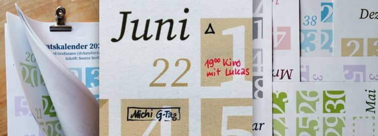

@charak
@charakBewährt seit zehn Jahren
Ich mag große Wandkalender, in denen ich meine Termine auffällig und übersichtlich eintragen kann. Das Problem war aber schon vor zehn Jahren, dass ich einfach keine so große Wandfläche in der Nähe meines Arbeitsplatzes habe. Und so habe ich das Konzept für meine Halbmonatskalender erarbeitet.

Die Vorteile des Designs:
-
große Zahlen, die sich gut lesen lassen, obwohl der Kalender drüben an der Wand hängt.
-
kompakt im Format DIN A5, braucht nicht den Platz eines riesigen Posters.
-
2–3 Wochen im Überblick, um einige Tage voraus- und zurückzuschauen.
-
Platz zum Reinschreiben, nämlich rund 8 cm² für kurze tägliche Notizen.
-
frisches Konzept und nicht die 08/15-Vorlage in der abgenutzten Allerweltschrift Helvetica/Arial.
Natürlich hat das Kalenderdesign auch einen kleinen Nachteil: Es ist ungewohnt und man braucht ein wenig, bis man lernt, welches Kästchen für welchen Wochentag steht.
Als Schriftart habe ich dieses Jahr die Source Serif Pro von Frank Grießhammer gewählt. Außerdem gibt’s den Kalender wie schon für 2019 in Farbe.
Farb-Kalender herunterladen
(PDF-Datei, 284 kB)
Wer Graustufen lieber hat, kann auch die Schwarz-Weiß-Version herunterladen (PDF, 280 kB). Dann auf zwölf A4-Seiten ausdrucken, auf Wunsch jedes Blatt halbieren, sortieren und die Einzelblätter zusammenheften – mit Vielzweckklammer, im Copy-Shop spiralbinden lassen, obere Kante leicht leimen oder einfach jede Seite mittig lochen und aufhängen.
Über Weiterempfehlungen meines Kalender freue ich mich sehr. Dazu steht er unter einer Creative-Commons-Lizenz mit Namensnennung, nicht kommerzieller Nutzung und Weitergabe unter gleichen Bedingungen (CC BY-NC-SA). Wer den Kalender bearbeiten möchte (beispielsweise die optionalen Feiertage aufs eigene Bundesland anpassen), möge mich bitte kurz anschreiben oder hier kommentieren. Dann verschicke ich gerne die SVG-Dateien.
---
Rubrik(en):
#ansporn
#typografie